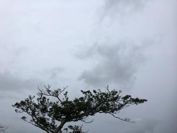
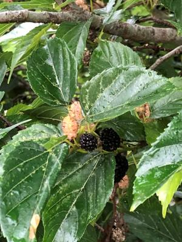
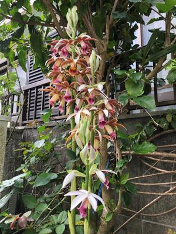

うるがいの話 ある日
最新: ユーチューブ上級者機能【うるがいの話 ある日】とは 一日だけのプログです
『うるがいの話』の最新一日だけのプログで、通信料が少なく経済的だ。カニの画像をクリックすると全ての日付が載る『うるがいの話』サイトを表示します
|
|
【うるがいの話】 うるがい(ｳﾙｶﾞｲ urugai)とは、『もずくがに』の名前でとても大きくなります。 |
|---|---|
|
|
【カミマヤーの話】 猫のことを方言でマヤーといいます。カミマヤー（kamimayaa）とは、神の猫のことです。 |
|
【たながぁの音楽】 たながぁ（ﾀﾅｶﾞｰ tanagaa）とは手長えびのことで、何種類かあり大きいのは車 エビぐらいになります。 |

|
【ぶながぁの話】 ぶながぁ(ﾌﾞﾅｶﾞｰ bunagaa)とは、赤い髪の毛、赤い身体、そして身長は１ｍ２０ｃｍ ぐらい、川の蟹を食べているの目撃された。場所は沖縄県国頭郡大宜味村のと ある村僕の隣近所に住んでいる爺さんから、聞いた話です。 |
|
|
【ギーマの話】 ギーマ(giima)とは、山原の里山に咲くスズランに似た、 花を付けます。実は食べられます、 気が付くと口の周りが紫になっています。 |
2023年04月02日 (日）ユーチューブ上級者機能
17:51
 
４月１日令和５年度ジャン、きりがいいので 大正琴演奏 『さくら さくら 大
正琴 数字譜 ＭｕｓｅＳｃｏｒｅ 』 の動画をアップした。使用したのはい
つものアカウントではなく、去年動画の副業研修で使っていたアカウント（名
称や写真は変更した）を使った。親切に楽譜や、楽譜データをダウンロード出
来るようにした。でダウンロードの動作確認をすると、『外部リンクをクリッ
ク可能にするには、まず１回限りの確認を完了してください。』と注意！され
る。エ、なんだなんだとネットで調べる。ダウンロードが利用できるためには
機能の利用資格が上級者向けになっていないといけないらしい、で研修で使っ
たアカウントは動画がアップロードできるだけの標準機能の資格になっている
。うーんではいつもアカウントは？と確認すると上級者になっていた。さらに
上級者の条件を確認するとチャネル履歴に該当している。ホー、５チャンネル
だしな・・・。ふーん、諦めるのも癪（しゃく）なのでパスポート（おお、初
めて利用する）を利用し『有効な身分証明書』で資格を得た。手続きを済ませ
認証までは１日程かかると説明があったが、１０時間ほどだったらしい（朝ｃ
ｈｒｏｍｅのプラウザを起動すると『ユーチューブ動画の権限が変更されまし
た、確認して下さい』とメッセージがあった（メールではない）。すぐ動作検
証を行う、ＯＫだった。暇人の挑戦は、続くのである。

１７時３８分 ビットコインの総資産 ￥１０、９４７（↓２７）